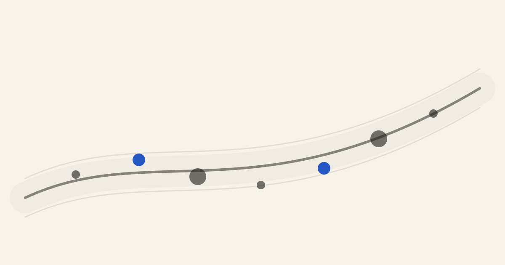

vialytics
Owning the services that grade the roads
Senior Software Engineer — Munich · Remote · 2026 – present
vialytics helps cities manage their roads with AI — and the grading services are where the product’s judgment lives.
I own the function-critical grading services and their integration with the Data Science products: the path that turns model output into the road-condition grades cities act on.
Now function-critical grading services
